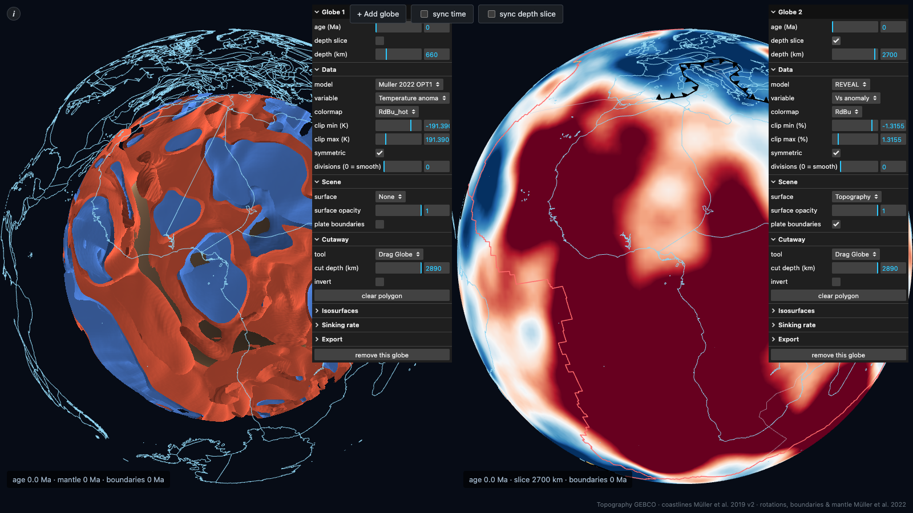

Plate reconstructions are more than a historical map: they're a boundary condition for models of what's happening underneath. Where plates converge, diverge or tear apart controls mantle flow, and mantle flow in turn shapes the surface: uplift and subsidence of sedimentary basins, the opening and closing of ocean gateways, and the long-term degassing of CO₂ that ties plate tectonics to past climate.

Open the live, interactive viewer ↗Drag to rotate, add more globes, or draw a cutaway polygon in the live viewer. A related paleoclimate viewer runs the same reconstructed geography through 540 million years of surface temperature.
Blobs that move
Two continent-sized piles of anomalous, hot rock (large low-shear-velocity provinces, or LLSVPs) sit at the base of the mantle beneath Africa and the Pacific. They're the source of many hotspot volcanoes and the plumes that carry diamonds to the surface. Reconstructing plate motions back a billion years and combining that with mantle flow simulations shows these "blobs" are not fixed: they assemble and break apart in a rhythm not unlike the way continents gather into supercontinents at the surface.
Basins, gateways and climate
The same plate motions that drive mantle flow also open and close ocean gateways and set the pace of continental rifting. Both have long-term climate consequences, from the onset of the Antarctic Circumpolar Current to the links between rifting, volcanic CO₂ degassing and past climate change. I've also worked on the surface expression of these deep processes, including paleoelevation histories of mountain belts like the Andes, reconstructed from igneous geochemistry (andes_paleoelevation).